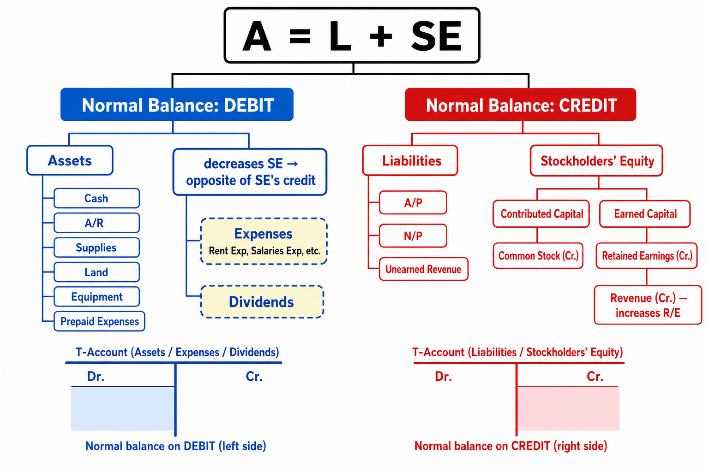
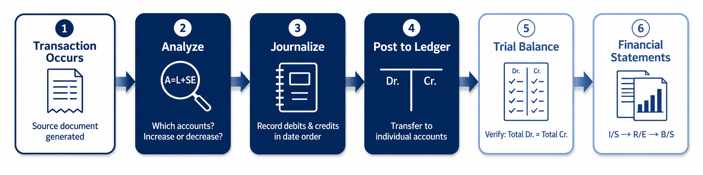
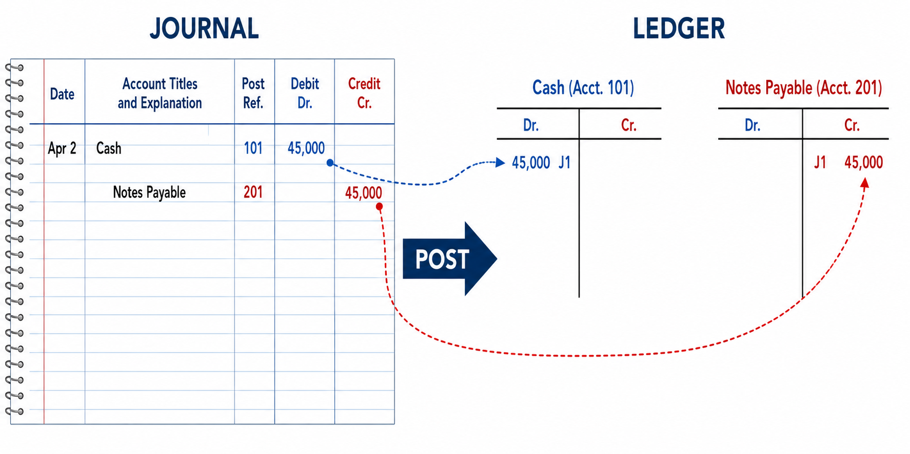

The Double-Entry System: Debits, Credits, and the Journal
In Chapter 1, we analyzed transactions using the accounting equation and recorded the results in a tabular format. That approach works well for a handful of transactions, but imagine a real company processing hundreds or thousands of transactions every day. A simple table would quickly become unmanageable. Accountants need a more organized, scalable system—and that system is the double-entry accounting method.
This chapter introduces the tools and procedures that form the backbone of every accounting system: accounts, T-accounts, debits and credits, journal entries, the ledger, and the trial balance. By the end of this chapter, you will be able to take any business transaction, analyze it, record it properly, and verify that your books are in balance.
Each link opens the lecture video at that topic. Timestamps are approximate — a topic may begin a few seconds before or after the mark, so step back a little if you land mid-sentence.
The accounting equation—Assets = Liabilities + Stockholders' Equity—is the foundation of every accounting system. Each category in this equation is broken down into individual accounts. An account is a detailed record of all increases and decreases that have occurred in a particular item during a specified period. For example, "Cash" is an account that tracks every dollar received and paid out.
Account — A detailed record of all increases and decreases in a specific asset, liability, or equity item during a given period.
Asset accounts represent economic resources owned by the company. The most common asset accounts include:
| Account | Description |
|---|---|
| Cash | Money held in bank accounts or on hand |
| Accounts Receivable | Amounts owed to the company by customers for services or goods provided on account |
| Office Supplies | Supplies purchased for use in operations; an asset until consumed |
| Prepaid Expenses | Payments made in advance for future services (e.g., prepaid rent, prepaid insurance) |
| Land | Real property owned by the company |
| Building | Structures owned and used in operations |
| Equipment / Furniture | Tangible assets used in the business over multiple periods |
When you see the prefix "prepaid" attached to any item, you should immediately recognize it as an asset. Think about it this way: you have paid cash for something, but you haven't used it yet. Because you paid in advance, you have the right to use that service or item in the future. At this point, it represents an asset. It becomes an expense only later, when it is actually consumed. Office supplies share this same nature—cash is paid upfront, and the item becomes an expense only as it is used. However, supplies are typically reported in their own separate account on the balance sheet rather than grouped under Prepaid Expenses.
| Account | Description |
|---|---|
| Accounts Payable | Amounts the company owes to suppliers for goods or services purchased on account |
| Notes Payable | Formal written promises to pay a specified amount, often with interest, at a future date |
| Utilities Payable | Amounts owed for utility services (electricity, water, etc.) already consumed |
| Unearned Revenue | Cash received from customers for services not yet performed; an obligation to deliver in the future |
Unearned Revenue is one of the most commonly misunderstood accounts. When a company receives cash for a service it has not yet provided, it cannot record revenue—because the service hasn't been performed. Instead, the company has an obligation to provide that service in the future, creating a liability. Once the service is eventually provided, the liability decreases and revenue is officially recognized. Think of it as the mirror image of a prepaid expense, but from the opposite perspective.
Stockholders' Equity represents the owners' residual claim on the company's assets. It consists of two main categories:
| Category | Account | Description |
|---|---|---|
| Contributed Capital | Common Stock | Ownership shares issued to investors in exchange for their investment |
| Earned Capital | Retained Earnings | Cumulative net income minus dividends; carried forward from prior periods |
| Revenues | Amounts earned from providing goods or services (e.g., Service Revenue) | |
| Expenses | Costs incurred in generating revenue (e.g., Rent Expense, Salaries Expense) | |
| Dividends | Distributions of earnings to stockholders; reduces Retained Earnings |
Dividends reduce Retained Earnings (Earned Capital), not Contributed Capital. Students sometimes confuse the two because dividends are distributed to stockholders. But Contributed Capital represents what investors originally paid in when they purchased shares—it does not change when dividends are declared. Dividends come out of accumulated earnings (Retained Earnings), which is the company's cumulative net income that has not been distributed. Always remember: dividends reduce Earned Capital, not Contributed Capital.
Chart of Accounts — A categorized list of all account names used by a company. It serves as a reference directory, while the ledger contains the actual T-accounts with their balances.
Every transaction affects at least two accounts. This is the essence of the double-entry accounting system: for every transaction, at least one account is debited and at least one account is credited. The total amount debited must always equal the total amount credited. This dual-effect recording ensures that the accounting equation remains in balance after every transaction.
Double-Entry System — An accounting method in which every transaction is recorded with at least one debit and one credit, and total debits must always equal total credits.
A T-account is a simplified visual representation of a ledger account. It takes its name from its shape: a horizontal line with a vertical line beneath it, forming the letter "T." Every T-account has two sides:
Do not overcomplicate debit and credit. Left simply means debit, and right simply means credit. Many students get confused because they link the term "credit" to their personal bank accounts or credit cards. Avoid doing that here. In accounting, these are directional labels—nothing more.
Never use + or − signs inside a T-account. Students sometimes write "+5,000" on the debit side to mean an increase, but this creates confusion. In accounting, we only use Dr. and Cr.—the position (left or right) already tells you whether it is a debit or credit. Adding +/− signs is redundant and error-prone.
The normal balance of an account is the side on which the account's balance increases. This concept is derived directly from the accounting equation:
\(\text{Assets} = \text{Liabilities} + \text{Stockholders' Equity}\)
Left side of the equation → Normal balance is Debit
Right side of the equation → Normal balance is Credit
Where an account sits in the accounting equation determines its normal balance. Assets are on the left side of the equation, so their normal balance is a debit (the left side of the T-account). Liabilities and Stockholders' Equity are on the right side of the equation, so their normal balance is a credit (the right side of the T-account).

This is the part that trips up many students. Stockholders' Equity has a credit normal balance. Revenue increases Retained Earnings, which increases SE, so Revenue shares that credit normal balance. But Expenses and Dividends decrease Retained Earnings. Since a decrease to a credit-balance account is recorded on the opposite side, the normal balance for Expenses and Dividends must be a debit.
In other words: when an expense is recorded, it is debited. That debit ultimately causes Retained Earnings (and therefore SE) to go down, maintaining the balance of the equation.
| Account Type | Normal Balance | Increase | Decrease |
|---|---|---|---|
| Assets | Debit | Debit | Credit |
| Liabilities | Credit | Credit | Debit |
| Common Stock | Credit | Credit | Debit |
| Retained Earnings | Credit | Credit | Debit |
| Revenue | Credit | Credit | Debit |
| Expenses | Debit | Debit | Credit |
| Dividends | Debit | Debit | Credit |
Before we dive into journal entries, let us see where they fit in the overall accounting process:

Whenever a transaction occurs, it generates a source document—a purchase invoice, bank check, sales receipt, or billing statement. The company analyzes this document to determine the financial impact of the transaction (transaction analysis). Once analyzed, the transaction is recorded in the journal, a chronological record of all the company's transactions.
When writing a journal entry, follow these rules:
Compound Journal Entry — A journal entry that involves more than one debit and/or more than one credit. Regardless of how many accounts are involved, total debits must always equal total credits.
For each transaction, follow this systematic approach:
Let us work through a series of transactions for a company during the month of April. Each example demonstrates the full analysis: identify the accounts, determine the direction, apply debits and credits, and record the journal entry.
April 2: The company borrowed $45,000 from the bank and signed a note payable.
Analysis: The company received cash, so the asset Cash increases. The company signed a note, creating an obligation, so the liability Notes Payable increases. An increase to an asset is a debit; an increase to a liability is a credit.
| Account | Debit | Credit |
|---|---|---|
| Cash | 45,000 | |
| Notes Payable | 45,000 |
April 4: The company paid $40,000 cash to acquire land.
Analysis: Land (asset) increases—debit. Cash (asset) decreases—credit. Notice that both sides involve assets: one goes up, one goes down. The equation stays in balance.
| Account | Debit | Credit |
|---|---|---|
| Land | 40,000 | |
| Cash | 40,000 |
April 9: The company performed services for a customer and received $5,000 in cash.
Analysis: Cash (asset) increases—debit. The company earned revenue from operations, so Service Revenue increases. Revenue increases Stockholders' Equity, and since SE has a credit normal balance, revenue is recorded as a credit. Here is a useful way to think through unfamiliar transactions: Cash increased, so one side is clear. Now ask—did any other Asset decrease? No. Did a Liability increase? No. By elimination, the only remaining possibility is that Stockholders' Equity increased. Since the company earned this money by providing services, the increase is classified as Service Revenue.
| Account | Debit | Credit |
|---|---|---|
| Cash | 5,000 | |
| Service Revenue | 5,000 |
April 13: The company purchased office supplies on account for $300.
Analysis: Office Supplies (asset) increases—debit. The company did not pay cash but purchased "on account," creating an obligation. Accounts Payable (liability) increases—credit.
| Account | Debit | Credit |
|---|---|---|
| Office Supplies | 300 | |
| Accounts Payable | 300 |
When you see the phrase "on account," ask yourself: is the company owed money or does it owe money? If the company performed services and will be paid later → Accounts Receivable (asset). If the company purchased something and will pay later → Accounts Payable (liability).
April 15: The company performed services for a customer on account for $2,600.
Analysis: Even though cash was not received, the company has earned the revenue by providing services. Accounts Receivable (asset) increases —debit. Service Revenue increases—credit.
| Account | Debit | Credit |
|---|---|---|
| Accounts Receivable | 2,600 | |
| Service Revenue | 2,600 |
April 18: The company paid $1,200 on account.
Analysis: Paying "on account" means settling a previously existing liability. Accounts Payable (liability) decreases—debit (opposite of its credit normal balance). Cash (asset) decreases—credit.
| Account | Debit | Credit |
|---|---|---|
| Accounts Payable | 1,200 | |
| Cash | 1,200 |
April 21: The company paid several cash expenses: salaries $3,000, rent $1,500, and interest $400.
Analysis: All three are expense accounts. The normal balance for expenses is a debit, so each expense increases with a debit. Cash decreases by the total ($4,900)—credit. This is a compound journal entry with multiple debits and one credit.
| Account | Debit | Credit |
|---|---|---|
| Salaries & Wages Expense | 3,000 | |
| Rent Expense | 1,500 | |
| Interest Expense | 400 | |
| Cash | 4,900 | |
| Total | 4,900 | 4,900 |
April 25: The company received $3,100 from a customer on account.
Analysis: Cash was collected from a customer who previously owed money. Cash (asset) increases—debit. Accounts Receivable (asset) decreases—credit. Note: no revenue is recorded here because the revenue was already earned when the service was originally performed.
| Account | Debit | Credit |
|---|---|---|
| Cash | 3,100 | |
| Accounts Receivable | 3,100 |
April 27: The company received a $200 utility bill to be paid next month.
Analysis: The company used utilities, so Utilities Expense increases—debit. The bill has not been paid, creating a liability. Utilities Payable increases—credit. Notice that no cash is involved in this transaction.
| Account | Debit | Credit |
|---|---|---|
| Utilities Expense | 200 | |
| Utilities Payable | 200 |
April 29: The company received $1,500 for services to be performed next month.
Analysis: Cash was received, so Cash (asset) increases—debit. Can we record revenue? No—the services have not yet been provided. The company now has an obligation to perform these services, creating a liability called Unearned Service Revenue—credit.
| Account | Debit | Credit |
|---|---|---|
| Cash | 1,500 | |
| Unearned Service Revenue | 1,500 |
April 30: The company paid $1,800 in cash dividends to stockholders.
Analysis: Paying dividends reduces Stockholders' Equity. Since SE has a credit normal balance, a decrease is recorded as a debit. Dividends increases—debit. Cash (asset) decreases—credit.
| Account | Debit | Credit |
|---|---|---|
| Dividends | 1,800 | |
| Cash | 1,800 |
After recording transactions in the journal, the next step is posting— transferring the dollar amounts from the journal to the corresponding T-accounts in the ledger. The ledger is simply a comprehensive collection of all the company's T-accounts.
Ledger — A record holding all the accounts of a business, the changes in those accounts, and their balances. It is a collection of all individual T-accounts.
Posting follows a simple rule: if the journal entry debits an account, transfer that amount to the debit side (left) of that account's T-account in the ledger. If the journal entry credits an account, transfer the amount to the credit side (right).

To maintain an audit trail, accountants use posting references. In the journal, a "Post Ref." column records the account number to which the entry was posted (e.g., "101" for Cash). In the ledger, a posting reference like "J1" indicates that the transaction originated from Journal Page 1. This cross-referencing system allows accountants to trace any transaction in either direction.
At the end of the period, after all transactions have been posted, the ending balance for each T-account is calculated. Simply find the difference between total debits and total credits within the account. The ending balance is always recorded on the side of the account's normal balance. To find the ending balance, total the debit side and total the credit side separately. The larger total determines which side the balance falls on. Then subtract the smaller total from the larger total to get the ending balance amount. For example, if a Cash account has total debits of $54,600 and total credits of $47,900, the debit side is larger, so the ending balance is on the debit side: $54,600 − $47,900 = $6,700 (Dr.).
Total debits: 54,600 − Total credits: 47,900 = Ending balance: 6,700 (Dr.)
Once ending balances have been calculated for every account, the next step is to compile them into a trial balance. The trial balance is a list of all ledger accounts alongside their ending balances, organized into debit and credit columns.
Trial Balance — A list of all accounts and their balances at a point in time, used to verify the mathematical equality of total debits and total credits. It is an internal working document, not a financial statement.
Accounts on the trial balance are always listed in a specific order: Assets first, followed by Liabilities, then Stockholders' Equity (including Common Stock, Retained Earnings, Dividends, Revenues, and Expenses).
| Account | Debit | Credit |
|---|---|---|
| Cash | 6,700 | |
| Accounts Receivable | — | |
| Office Supplies | 300 | |
| Land | 40,000 | |
| Accounts Payable | — | |
| Notes Payable | 45,000 | |
| Utilities Payable | 200 | |
| Unearned Service Revenue | 1,500 | |
| Common Stock | — | |
| Dividends | 1,800 | |
| Service Revenue | 7,600 | |
| Salaries & Wages Expense | 3,000 | |
| Rent Expense | 1,500 | |
| Interest Expense | 400 | |
| Utilities Expense | 200 | |
| Total | 53,900 | 54,300 |
Note: Some accounts show "—" because their balances netted to zero from the examples above. In a real scenario, the opening balances from stock issuance and prior A/R activity would appear. The key point is that total debits must equal total credits.
The trial balance is not a Balance Sheet. It is merely an internal working document used to verify mathematical accuracy. A Balance Sheet would not include income statement items (revenues and expenses) or dividends. The trial balance includes all accounts—it is just a raw list of every account's ending balance before financial statements are prepared. You may notice that Revenue, Expense, and Dividend accounts appear on the trial balance even though they do not appear as separate line items on the Balance Sheet. These are temporary accounts —they exist only to track activity during the current period. At the end of the period, their balances are transferred (or "closed") into Retained Earnings. The next section explains exactly how these accounts flow from the trial balance into the financial statements.
The trial balance serves as the starting point for preparing financial statements. The statements must be prepared in a specific order because each one builds on the previous:
On the trial balance, you will see revenue, expense, and dividend accounts listed individually. These are temporary accounts that ultimately flow into Retained Earnings. The only equity accounts that appear on the final Balance Sheet are Common Stock and the summarized ending balance of Retained Earnings.
A balanced trial balance is necessary, but it does not guarantee error-free records. You could still have errors such as recording a transaction to the wrong account or recording an incorrect amount for both the debit and credit. However, if total debits do not equal total credits, you know for certain an error exists.
| Method | How It Works | What It Finds |
|---|---|---|
| Search for Missing Account | Compare the trial balance to the chart of accounts | An account that was accidentally omitted |
| Divide by 2 | Take the difference between total debits and total credits and divide by 2 | An amount that was recorded as a debit when it should have been a credit (or vice versa), causing a double-sized discrepancy |
| Divide by 9 | Divide the out-of-balance amount by 9; if it divides evenly, suspect a slide error or transposition error | Slide error: writing $10 instead of $100 (difference = $90; 90 ÷ 9 = 10) Transposition error: writing $21 instead of $12 (difference = $9; 9 ÷ 9 = 1) |
Each chapter in this course introduces a key financial ratio. Chapter 2 introduces the Debt Ratio, which measures the proportion of a company's total assets that are financed through debt.
\[\text{Debt Ratio} = \frac{\text{Total Liabilities}}{\text{Total Assets}}\]
A higher debt ratio indicates that a larger portion of the company's assets is financed by creditors rather than owners. Generally, this means greater pressure to make interest payments. However, a high debt ratio is not automatically negative—if a company has sufficient cash flow to comfortably service its debt, leveraging debt can help finance growth and improve returns for stockholders.
Never judge a company's financial health based on a single ratio. A debt ratio of 0.80 might be perfectly healthy for a utility company with stable, predictable cash flows, but dangerously high for a startup with volatile revenues. Context and comprehensive analysis are always required.